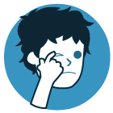
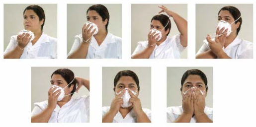

FAQ
COVID-19
FAQ - Perguntas e Respostas
Este material será utilizado como um Guia rápido com Perguntas e Respostas sobre o coronavírus SARS-CoV-2 e a doença COVID-19 para apoio aos alunos do curso e demais interessados no tema.
-
1) O que é covid-19?
É o nome dado à doença causada pelo coronavírus. Esse nome vem de "COrona", "VIrus" e "Disease” (doença), e 2019 representa o ano em que ela surgiu (o surto foi relatado à Organização Mundial da Saúde em 31 de dezembro).
-
2) O que significa a palavra coronavírus?
A palavra coronavírus refere-se ao grupo ao qual o vírus pertence.
Os coronavírus são a segunda principal causa de resfriado comum.
-
3) O que significa Sars-CoV-2?
É o nome do vírus, uma sigla para Severe Acute Respiratory Syndrome CoronaVirus 2 (síndrome respiratório aguda grave por coronavírus 2, em inglês).
-
4) Quando devo usar SARS-CoV-2, COVID-19 e
coronavírus?
- SARS-CoV-2, coronavírus, novo coronavírus: Use quando se referir ao
vírus.
Exemplo: “Mais de 290 estão infectadas pelo coronavírus no Brasil” - COVID-19: Use quando se referir à doença. A referência é no feminino - a
(doença) COVID-19.
Exemplo: A (doença) COVID-19 já matou mais de 2.500 pessoas na Itália.
- SARS-CoV-2, coronavírus, novo coronavírus: Use quando se referir ao
vírus.
-
5) Como surgiu o novo coronavírus?
O novo coronavírus foi identificado pela primeira vez em Wuhan, na província de Hubei, China, em pessoas expostas em um mercado de frutos do mar e de animais vivos.
-
6) O novo coronavírus é o mesmo que os
vírus Sars ou Mers?
Não. Os coronavírus pertencem a uma grande família de vírus, que podem circular tanto entre pessoas, como entre animais, incluindo camelos, gatos e morcegos. O recém-identificado coronavírus não é o mesmo que o coronavírus que provoca a Síndrome Respiratória do Oriente Médio (Mers) ou a Síndrome Respiratória Aguda Grave (Sars).
-
7) Qual é a diferença entre transmissão
local e comunitária (sustentada)?
- Transmissão local: São casos de pessoas que se infectaram e não estiveram em nenhum país com registro da doença, mas tiveram contato com outro paciente infectado, que trouxe o vírus de fora do país.
- Transmissão comunitária ou sustentada: São casos nos quais não é possível identificar as fontes de transmissão da doença. Esse tipo de transmissão sugere circulação ativa do vírus na comunidade.
-
8) Quais os primeiros sintomas
da COVID-19?
Os sintomas da COVID-19 são bastante parecidos com os da gripe: febre, tosse e dificuldade para respirar.
-
9) Como diferenciar gripe comum do
coronavírus?
Como os sintomas da COVID-19 são bastante parecidos com os da gripe, a única forma de saber se a infecção é causada pelo coronavírus é por exame laboratorial. Veja abaixo o quadro comparativo dos sintomas:

Quadro comparativo - coronavírus, Resfriado e Gripe no site da UNA-SUS.
Fonte: UNA-SUS.
-
10) Quais são os critérios para aplicação
do teste? Pessoas com sintomas leves não estão sendo testadas?
Pessoas com dificuldade respiratória tem prioridade porque não há kits suficientes para todos que procuram os serviços de saúde. A pessoa que não tiver sintoma grave deve ficar em casa e circular o menos possível.
-
11) Como posso fazer o teste de
diagnóstico na Fiocruz?
O laboratório de referência da Fiocruz realiza testes em materiais que são coletados nas unidades de saúde e enviados para a Fundação Oswaldo Cruz, pelos laboratórios centrais de saúde pública. A Fiocruz não realiza a coleta diretamente com os cidadãos.
-
12) A COVID-19 pode apresentar outros
sintomas?
Os sinais e sintomas do novo coronavírus (SARS-CoV-2) são principalmente respiratórios. Ela pode causar infecção do trato respiratório inferior, como as pneumonias.
-
13) Pessoas com sintomas leves podem
transmitir a COVID-19?
Sim. Foi relatada infecção assintomática com SARS-CoV-2, mas ainda não se sabe qual o papel da infecção assintomática na transmissão da doença. Da mesma forma, o papel da transmissão pré-sintomática (detecção de infecção durante o período de incubação antes do início da doença) é desconhecido.
-
14) A pessoa pode transmitir o coronavírus
mesmo sem apresentar sintoma?
Sim. O período de incubação do vírus pode variar de dois a 14 dias. Durante esse tempo, o vírus tem capacidade de transmissão. Por isso, é importante adotar medidas gerais de prevenção, como lavar as mãos com frequência e não compartilhar objetos de uso pessoal.
-
15) Quando a pessoa deve procurar
atendimento de saúde?
A pessoa deve procurar uma unidade de saúde se apresentar sintomas mais intensos, como dificuldade para respirar, febre muito alta (a partir de 39°C) e mal-estar excessivo.
-
16) Devo me preocupar com o coronavírus?
As pessoas devem se preocupar com o impacto do surto de COVID-19. Apesar de a doença ser geralmente leve, especialmente para crianças e adultos jovens, ela pode se agravar, necessitando de cuidados hospitalares. A atenção deve ser direcionada à proteção individual e comunitária, por meio de medidas de higiene e etiqueta respiratória. É importante manter-se informado e seguir as orientações das autoridades locais de saúde, incluindo quaisquer restrições impostas a viagens, movimentação e reuniões.
-
17) A infecção pelo coronavírus pode
provocar sintomas graves?
Sim. Sintomas graves como febre alta, dificuldade respiratória e hipóxia podem aparecer rapidamente, principalmente em grupos vulneráveis como: idosos, pessoas com deficiência, pessoas com doenças crônicas ou imunodeprimidas.
-
18) Quais são as pessoas com maior risco
para evoluir com formas graves da doença?
Segundo a Organização Mundial da Saúde (OMS), adultos com mais de 60 anos e pessoas com doenças preexistentes têm maiores riscos de ter a doença agravada. Algumas das doenças preexistentes de alerta são: hipertensão arterial, diabetes, doença cardíaca, doença pulmonar, neoplasias, transplantados, uso de imunossupressores.
-
19) Quais são as pessoas que compõem os
grupos de risco ou vulnerável?
No caso da COVID-19, são os idosos, pessoas com deficiência e pessoas com doenças associadas, como cardíacos, diabéticos e pessoas com outros problemas respiratórios como a asma e a bronquite. Essas pessoas podem desenvolver o quadro mais grave da doença e, por isso, têm mais chance de morrer devido à infecção e devem ter prioridade no atendimento e na testagem para o vírus.
-
20) As pessoas que se recuperam da
COVID-19 podem ser infectadas novamente?
A resposta imune ao COVID-19 ainda não está esclarecida. É pouquíssimo provável que os pacientes com infecção por coronavírus sejam reinfectados logo após a recuperação, apesar de não se saber se uma proteção imunológica semelhante será observada em pacientes com COVID-19.
-
21) Qual é o risco para as mulheres
grávidas de contrair a COVID-19?
Atualmente, não se sabe se as mulheres grávidas têm maior chance de adoecer com o COVID-19 do que o público em geral, nem se são mais propensas a terem doenças graves como resultado. As mulheres grávidas sofrem alterações em seus corpos que podem aumentar o risco de algumas infecções. É sempre importante que se protejam de doenças.
-
22) A COVID-19 pode causar problemas
durante a gravidez?
Atualmente, não se sabe se o coronavírus causa problemas durante a gravidez ou se afeta a saúde do bebê após o nascimento.
-
23) Uma mulher lactante que tenha sido
infectada pelo coronavírus pode continuar amamentando?
A Organização Mundial da Saúde (OMS) orienta a manutenção da amamentação. Até o momento, não há elementos que comprovem que o leite materno possa disseminar o novo coronavírus. A lactante com COVID-19 deve estar atenta à higiene respiratória, lavar as mãos antes e após tocar o seu bebê e limpar e desinfetar as superfícies rotineiramente.
-
24) O que é etiqueta respiratória?

É ter cuidado ao tossir e espirrar. Use um lenço de papel sempre que for tossir ou espirrar e, em seguida, descarte-o. Na ausência do lenço, espirre sobre o antebraço, em vez de usar as mãos para proteger o rosto.
-
25) Quais são os critérios para aplicação
do teste? Pessoas com
sintomas leves não estão sendo testadas?
Para reduzir o risco geral de contrair ou transmitir infecções respiratórias agudas, incluindo o coronavírus, algumas das medidas propostas por diferentes autoridades sanitárias são:.

Lavar as mãos frequentemente com água e sabonete por pelo menos 20 segundos, respeitando os cinco momentos de higienização. Se não houver água e sabonete, usar um desinfetante para as mãos à base de álcool 70%.
Evitar tocar nos olhos, nariz e boca com as mãos não lavadas.

Evitar contato próximo com pessoas doentes e manter-se a uma distância de pelo menos um metro das demais pessoas.
Cobrir com o cotovelo ou com um lenço de papel a boca e nariz ao tossir ou espirrar. No caso do papel, jogar no lixo.

Limpar e desinfetar objetos e superfícies tocados com frequência.
-
26) Se estiver doente, o que fazer para
não passar a doença?
Você deve ficar em casa se estiver doente. No caso da pandemia atual, a maioria dos países afetados adotaram estratégias de isolamento e/ou quarentena, entre eles o Brasil. As regras para a população, os serviços e o comércio variam em cada cidade ou país e é crucial que todos sigam as recomendações das autoridades locais.
-
27) O que posso fazer para evitar a
propagação da COVID-19 no meu local de trabalho?
Lavar as mãos frequentemente com água e sabonete por pelo menos 20 segundos, respeitando os cinco momentos de higienização. Se não houver água e sabonete, usar um desinfetante para as mãos à base de álcool 70%.
Evitar tocar nos olhos, nariz e boca com as mãos não lavadas.
Evitar contato próximo com pessoas doentes e manter-se a uma distância de pelo menos um metro das demais pessoas.
Cobrir com o cotovelo ou com um lenço de papel a boca e nariz ao tossir ou espirrar. No caso do papel, jogar no lixo.
Limpar e desinfetar objetos e superfícies tocados com frequência.

Mantenha os ambientes bem ventilados
-
28) O que fazer em casos de viagens
essenciais/inadiáveis?
Apesar de não haver nenhuma restrição para viagens nacionais (domésticas), a orientação é que todos que tenham possibilidade de ficar em casa, que fiquem. Caso não seja possível, higienize suas mãos frequentemente com água e sabão ou álcool 70% ou e evite tocar o rosto. Mantenha-se a pelo menos um metro de distância das demais pessoas. Adote medidas de etiqueta respiratória e não viaje de forma alguma caso faça parte do grupo de risco ou apresente sintomas de tosse e febre.
-
29) Quais são os critérios para aplicação
do teste? Pessoas com
sintomas leves não estão sendo testadas?
Pessoas com dificuldade respiratória tem prioridade porque não há kits suficientes para todos que procuram os serviços de saúde. A pessoa que não tiver sintoma grave deve ficar em casa e circular o menos possível.
-
30) O que devo fazer ao retornar de
viagem?
Ao retornar de uma área com propagação de COVID-19, deve-se monitorar os sintomas por 14 dias. Em caso de sintomas leves, deve ser feito o isolamento. Em caso de sintomas graves, procurar uma unidade de saúde.
Veja sobre os sintomas nas seguintes perguntas deste FAQ:
8) Quais os primeiros sintomas da COVID-19?
17) A infecção pelo coronavírus pode provocar sintomas graves?
-
31) Como o coronavírus é transmitido?
O coronavírus é transmitido a partir de um indivíduo que tem o vírus, em contato próximo (cerca de 1m) com outras pessoas. Ocorre através do contato físico (aperto de mão, abraço etc), pequenas gotículas de saliva, espirro, tosse e através de objetos ou superfícies contaminadas, como celulares, mesas, maçanetas, brinquedos, teclados de computador etc.
-
32) Qual o tratamento para as pessoas com
COVID-19?
Ainda não há um tratamento específico para a doença. As pessoas infectadas devem permanecer em isolamento e receber cuidados de saúde para evitar o agravamento do quadro e aliviar os sintomas, reduzindo o desconforto. Pessoas com sintomas graves devem ser hospitalizadas. Diversos estudos estão em fase inicial para a formulação de protocolos de tratamento. A maioria dos pacientes se recupera graças aos cuidados de suporte.
-
33) O que se pode fazer para controlar os
sintomas?
Beber bastante água auxilia no controle da febre. Banhos quentes e umidificadores de ar podem ser utilizados no quarto para ajudar a diminuir a dor de garganta e a tosse. O serviço de saúde deve ser procurado sempre que os sintomas se agravarem.
-
34) A vacina para influenza pode proteger
também contra o novo coronavírus?
Não. São vírus diferentes. A vacinação para influenza auxilia no combate da pandemia evitando a coinfecção pelos dois vírus ao mesmo tempo e reduzindo a pressão sobre o sistema de saúde. Por isso, é importante manter o calendário de vacinação atualizado e seguir as recomendações das autoridades sanitárias em relação à vacinação.
-
35) O que é período de incubação?
Período de incubação é o tempo que leva para aparecerem os primeiros sintomas, depois da infecção por coronavírus.
-
36) Qual o período de incubação do
coronavírus?
O período de incubação pode variar de um a 14 dias, mais frequentemente ao redor de cinco dias.
Essas estimativas estão sendo atualizados à medida que mais dados se tornam disponíveis.
-
37) Quem deve usar máscaras cirúrgicas?
A OPAS e a OMS recomendam que as máscaras cirúrgicas sejam usadas por:
- pessoas com sintomas respiratórios, como tosse ou dificuldade de respirar, inclusive ao procurar atendimento médico;
- profissionais de saúde e pessoas que prestam atendimento a indivíduos com sintomas respiratórios;
- profissionais de saúde, ao entrar em uma sala com pacientes ou tratar um indivíduo com sintomas respiratórios.
No entanto, o Ministério da Saúde está preparando um novo protocolo com indicação de uso de máscaras também para pessoas que não apresentam sintomas.
-
38) Como usar as máscaras cirúrgicas?
- Antes de tocar na máscara, limpe as mãos com um higienizador à base de álcool ou água e sabão.
- Pegue a máscara e verifique se está rasgada ou com buracos
- Oriente qual lado é o lado superio máscara está voltado para fora (o lado colorido).
- Coloque a máscara no seu rosto com cuidado para cobrir a boca e o nariz e amarre com segurança para minimizar as lacunas entre o rosto e a máscara; Aperte a tira de metal ou a borda rígida da máscara para que ela se adapte ao formato do seu nariz.
Etapas para colocãção da máscara no rosto: a) Segurar o respirador com a pinça nasal próxima à ponta dos dedos deixando as alças pendentes; b) Encaixar o respirador sob o queixo; c) Posicionar um tirante na nuca e o outro sobre a cabeça; d) Ajustar a pinça nasal no nariz; e) Verificar a vedação pelo teste de pressão positiva
Fonte: Governo do Ceará.
- Puxe a parte inferior da máscara para que ela cubra sua boca e seu queixo. Enquanto estiver utilizando a máscara, evite tocá-la;
-
39) Quando devo substituir a máscara
cirúrgica por outra nova?
Substitua a máscara usada por uma nova máscara limpa e seca assim que estiver úmida ou danificada.
-
40) Como remover a máscara cirúrgica?
Após o uso, retire a máscara removendo as presilhas elásticas ou laços por trás das orelhas, mantendo a máscara afastada do rosto e das roupas. O cuidado é sempre para evitar tocar nas superfícies potencialmente contaminadas da máscara (parte frontal).
-
41) Como descartar a máscara?
- Descarte a máscara em uma lixeira fechada e apropriada imediatamente após o uso.
- Higienize as mãos depois de tocar ou descartar a
-
42) É indicado usar luvas descartáveis em
locais públicos para a prevenção do coronavírus?
Não. Lavar as mãos com água e sabão e evitar o contato com o rosto oferece uma proteção mais efetiva do que o uso de luvas ao sair de casa para locais públicos. É possível se contaminar pelo coronavírus mesmo utilizando luvas descartáveis caso você toque em superfícies contaminadas e logo após nos olhos, nariz ou boca.
-
43)Existe uma vacina ou medicamento contra
COVID-19?
Até o momento, não há vacina nem medicamento antiviral específico para prevenir ou tratar a COVID-19. Vários países e organizações estão coordenando esforços para desenvolver vacinas e medicamentos para a prevenção e o tratamento.
-
44) Os antibióticos são eficazes na
prevenção e/ou tratamento do COVID-19?
Não. Os antibióticos não funcionam contra vírus, eles funcionam apenas em infecções bacterianas. A COVID-19 é causada por um vírus. Portanto, os antibióticos não funcionam. Antibióticos devem ser usados apenas com indicação médica para tratar uma infecção bacteriana.
-
45) Existem medicamentos para a prevenção
de COVID-19?
Embora alguns medicamentos possam proporcionar conforto e aliviar os sintomas da COVID-19, não há evidências de que a medicina atual possa prevenir ou curar a doença. Não se recomenda a automedicação com nenhum medicamento, incluindo antibióticos, como forma de prevenção ou cura para a doença.
-
46) Posso utilizar a Cloroquina contra a
COVID-19?
Ainda não há evidências de que a cloroquina ou a variante hidroxicloroquina tenha efeito contra a COVID-19, doença provocada pelo novo coronavírus. Não se deve adquirir esses medicamentos, pois são importantes para várias condições reumatológicas e dermatológicas que exigem tratamento contínuo, além de apresentarem potenciais efeitos colaterais.
-
1) Como profissionais de saúde devem
se proteger?
Profissionais de saúde devem utilizar medidas de precaução padrão, de contato físico e com gotículas (máscara cirúrgica, luvas, avental não estéril e óculos de proteção), a depender do procedimento a ser realizado.
Para a realização de procedimentos que gerem aerossolização de secreções respiratórias, como intubação, aspiração de vias aéreas ou indução de escarro, deverá ser utilizado precaução por aerossóis, com uso de máscara N95.
A Sociedade Brasileira de Medicina de Família e Comunidade (SBMFC), visando preservar a saúde das médicas e médicos da família e comunidade e profissionais que atuam na APS, reforça as seguintes orientações durante o atendimento e permanência no local de atendimento:
- Para a contenção respiratória utilizar máscara cirúrgica; uso de luvas, gorro e aventais descartáveis; lavar as mãos com frequência; e limpar e desinfetar objetos e superfícies tocados com frequência.
- Para procedimentos produtores de aerossóis usar máscara N95/PFF2;
- Todo profissional que atender os pacientes com suspeita de Síndrome Gripal deve usar EPIs e adotar as medidas para evitar contágio, conforme indicado acima. Atenção para os cuidados que devem ser tomados em relação ao uso de máscara cirúrgica;
- Coloque a máscara com cuidado para cobrir a boca, o nariz e amarre com segurança para minimizar as lacunas entre o rosto e a máscara;
- Enquanto estiver utilizando a máscara, evite tocá-la;
- Remova a máscara usando técnica apropriada (ou seja, não toque na frente, mas remova o laço ou nó da parte posterior);
- Após a remoção, ou sempre que tocar em uma máscara usada, higienize as mãos com água e sabão ou álcool gel, se visivelmente suja;
- Substitua a máscara por uma nova máscara limpa e seca assim que estiver úmida ou danificada;
- Não reutilize máscaras descartáveis;
- Descarte em local apropriado as máscaras após cada uso e troque de máscara após atender novos pacientes.
-
2) Quais as medidas que os
profissionais de saúde devem adotar, além do uso de máscaras?
Para a contenção respiratória, além do uso de máscara cirúrgica, deve-se utilizar luvas, gorro e aventais descartáveis. Além disso, lavar as mãos com frequência e limpar e desinfetar objetos e superfícies tocados com frequência utilizando álcool 70%. Para procedimentos produtores de aerossóis, usar máscara N95/PFF2.
-
3) O que são aerossóis?
Aerossóis são classificados como uma suspensão de micropartículas sólidas ou líquidas com dimensões microscópicas, que podem ser dispersas no ar a longas distâncias sob a forma de uma fina névoa, passíveis de permanecer flutuando por um longo período de tempo.
-
4) Quais os
procedimentos produtores de aerossóis?
Aerossóis podem ser produzidos pela fala, espirro ou tosse, como também durante os procedimentos de exame clínico de vias aéreas superiores e aspiração de vias aéreas.
-
5) Existe algum protocolo para o uso
da cloroquina/hidroxicloroquina no Brasil?
O Ministério da Saúde criou um protocolo para o uso desses medicamentos em pacientes internados com casos graves de coronavírus, observando estudos promissores que demonstram o benefício em pacientes graves. Há também pesquisas em andamento para testar sua efetividade no tratamento da COVID-19.
-
6) Como é o protocolo para o uso da
cloroquina/hidroxicloroquina no Brasil?
O protocolo prevê cinco dias de tratamento e é indicado apenas para pacientes hospitalizados. A cloroquina e hidroxicloroquina irão complementar todos os outros suportes utilizados no tratamento do paciente no Brasil, como assistência ventilatória e medicações para os sintomas, como febre e mal-estar. Esses medicamentos não são indicados para tratar casos leves.
-
7) Quais as medidas a serem adotadas
em casas de repouso ou asilos para idosos?
A Anvisa publicou orientações para a prevenção e o controle de infecções pelo novo coronavírus (COVID-19) em instituições de longa permanência para idosos (ILPIs), também conhecidas como asilos ou casas de repouso
-
8) Como deve ser feito o atendimento
pré-hospitalar móvel de urgência e transporte interinstitucional de casos suspeitos ou
confirmados?
Segundo nota técnica da Anvisa (NOTA TÉCNICA GVIMS/GGTES/ANVISA Nº 04/2020), deve-se melhorar a ventilação do veículo para aumentar a troca de ar durante o transporte. Além disso, limpar e desinfetar todas as superfícies internas do veículo após a realização do transporte. A desinfecção pode ser feita com álcool a 70%, hipoclorito de sódio ou outro desinfetante indicado para este fim e seguindo procedimento operacional padrão definido para a atividade de limpeza e desinfecção do veículo e seus equipamentos. Também deve-se realizar a higiene das mãos com álcool em gel ou água e sabonete líquido. Sempre notificar previamente ao serviço de saúde para onde o caso suspeito ou confirmado será encaminhado.
Observação 1: Deve-se evitar o transporte interinstitucional de casos suspeitos ou confirmados. Se a transferência do paciente for realmente necessária, o paciente deve utilizar máscara cirúrgica durante todo o percurso.
Observação 2: Todas essas medidas são baseadas no conhecimento atual sobre os casos de infecção pelo novo coronavírus (SARS-CoV-2) e podem ser alteradas conforme novas informações sobre o vírus forem disponibilizadas.
-
9) Quais medidas devem ser seguidas
pelos serviços de saúde que prestam atendimento ambulatorial ou de pronto atendimento aos casos
suspeitos ou confirmados pelo novo novo coronavírus (SARS-CoV-2)?
- Estabelecer critérios de triagem para identificação e pronto atendimento dos casos.
- Orientar os profissionais de saúde quanto às medidas de precaução a serem adotadas
- Disponibilizar máscara cirúrgica para os pacientes e acompanhantes e prover condições para higiene das mãos.
- Casos suspeitos de infecção pelo novo coronavírus (SARS-CoV-2) devem permanecer preferencialmente em área separada até a consulta ou encaminhamento para o hospital (caso necessária a remoção do paciente).
- Orientar os pacientes a adotar as medidas de etiqueta respiratória: se tossir ou espirrar, cobrir o nariz e a boca com cotovelo flexionado ou lenço de papel; utilizar lenço descartável para higiene nasal (descartar imediatamente após o uso e realizar a higiene das mãos); evitar tocar mucosas de olhos, nariz e boca; e realizar a higiene das mãos.
- Prover lenço descartável para higiene nasal na sala de espera.
- Prover lixeira com acionamento por pedal para o descarte de lenços de papel.
- Prover dispensadores com preparações alcoólicas para a higiene das mãos (sob as formas gel ou solução a 70%) nas salas de espera e estimular a higiene das mãos após contato com secreções respiratórias.
- Prover condições para higiene simples das mãos: lavatório/pia com dispensador de sabonete líquido, suporte para papel toalha, papel toalha, lixeira com tampa e abertura sem contato manual.
- Manter os ambientes ventilados.
- Eliminar ou restringir o uso de itens compartilhados por pacientes como canetas, pranchetas e telefones.
- Realizar a limpeza e desinfecção das superfícies do consultório e de outros ambientes utilizados pelo paciente.
- Realizar a limpeza e desinfecção de equipamentos e produtos para saúde que tenham sido utilizados na assistência ao paciente.
- Se houver necessidade de encaminhamento do paciente para outro serviço de saúde, sempre notificar previamente ao serviço referenciado.
-
10) De acordo com o que se sabe até
o momento, que orientações devem ser seguidas pelos serviços de saúde?
- Garantir a triagem e o isolamento
rápidos de pacientes com sintomas suspeitos de infecção pelo novo coronavírus (SARS-CoV-2) ou
outra infecção respiratória (por exemplo, febre e tosse):
- Identificar os pacientes em risco de ter infecção pelo novo coronavírus (SARS-CoV-2) antes ou imediatamente após a chegada ao estabelecimento de saúde.
- Implementar procedimentos de triagem para detectar pacientes sob investigação para o novo coronavírus (SARS-CoV-2) durante ou antes da triagem ou registro do paciente: garantir que todos os pacientes sejam questionados sobre a presença de sintomas de uma infecção respiratória ou contato com possíveis pacientes com o novo coronavírus (SARS-CoV-2).
- Orientar adequadamente a realização da
higiene respiratória e etiqueta da tosse (por exemplo, colocando uma máscara cirúrgica sobre o
nariz e sobre a boca do paciente) e isole o caso suspeito ou confirmado em uma sala.
- Fornecer suprimentos para higiene respiratória e etiqueta da tosse, incluindo condições para a higiene das mãos. E fornecer máscaras cirúrgicas, nas entradas dos serviços de saúde, salas de espera de pacientes, etc.
- Orientar sobre a necessidade da higiene das mãos frequente com água e sabonete líquido (40-60 segundos) ou preparação alcoólica a 70% (20 segundos).
- Orientar que os pacientes e profissionais de saúde evitem tocar olhos, nariz e boca com as mãos não lavadas.
- Realizar a limpeza e a desinfecção de objetos e superfícies tocados com frequência pelos pacientes e equipes assistenciais.
- Orientar os profissionais de saúde a evitar tocar superfícies próximas ao paciente (por exemplo mobílias e equipamentos de saúde) e aquelas fora do ambiente próximo ao paciente, com luvas ou outros EPI contaminados ou com as mãos contaminadas.
- Orientar os profissionais de saúde e profissionais de apoio a utilizarem equipamentos de proteção individual (EPI) durante a assistência direta aos pacientes ou que tenham contato com o paciente ou superfícies e materiais/produtos utilizados por ele e por seus acompanhantes/visitantes.
- Garantir a triagem e o isolamento
rápidos de pacientes com sintomas suspeitos de infecção pelo novo coronavírus (SARS-CoV-2) ou
outra infecção respiratória (por exemplo, febre e tosse):
-
11) Quais as orientações de
precauções durante a assistência aos pacientes suspeitos ou confirmados?
- Garantir a triagem, o reconhecimento precoce e o controle da fonte (isolar pacientes com suspeita de infecção pelo novo coronavírus (SARS-CoV-2);
- Utilizar precauções padrão para todos os pacientes: as precauções padrão assumem que todas as pessoas estão potencialmente infectadas ou colonizadas por um patógeno que pode ser transmitido no ambiente de assistência à saúde e devem ser implementadas para todos os casos suspeitos ou confirmados. Deve-se prestar muita atenção às capacitações sobre a colocação e retirada seguras de qualquer EPI;
- Implementar precauções adicionais (para gotículas e contato) para casos suspeitos e confirmados de infecção pelo novo coronavírus (SARS-CoV-2);
- Implementar precauções para aerossóis
em situações especiais:
Alguns procedimentos realizados em pacientes com infecção suspeita ou confirmada pelo novo coronavírus (SARS-CoV-2) podem gerar aerossóis (como, por exemplo, procedimentos que induzem a tosse, intubação ou aspiração traqueal, ventilação invasiva e não invasiva, ressuscitação cardiopulmonar, ventilação manual antes da intubação, indução de escarro, coletas de amostras nasotraqueais).
Para esses casos, veja a pergunta Quais os procedimentos produtores de aerossóis?
-
12) Onde devem ser realizados os
procedimentos que podem gerar aerossóis?
Os procedimentos que podem gerar aerossóis devem ser realizados preferencialmente em uma unidade de isolamento respiratório com pressão negativa e filtro HEPA (High Efficiency Particulate Arrestance). Na ausência desse tipo de unidade, deve-se colocar o paciente em um quarto com portas fechadas (com janelas abertas) e restringir o número de profissionais durante os procedimentos. Além disso, deve-se orientar a obrigatoriedade do uso da máscara de proteção respiratória (respirador particulado) com eficácia mínima na filtração de 95% de partículas de até 0,3µ (tipo N95, N99, N100, PFF2 ou PFF3) pelos profissionais de saúde.
Nota 1: Os pacientes com sintomas de infecções respiratórias devem utilizar máscara cirúrgica desde a chegada ao serviço de saúde, na chegada ao local de isolamento e durante a circulação dentro do serviço (transporte dos pacientes de uma área/setor para outro).
Nota 2: Ressalta-se a necessidade do uso racional de EPI nos serviços de saúde.
Nota 3: A Anvisa publicou cartazes contendo orientações sobre as medidas de precauções, que podem ser acessados por este link.
-
13) Quais são as orientações pós
morte?
Os princípios das precauções padrão de controle de infecção e precauções baseadas na transmissão devem continuar sendo aplicados no manuseio do corpo. Isso ocorre devido ao risco contínuo de transmissão infecciosa por contato, embora o risco seja geralmente menor do que para pacientes ainda vivos.
Orientações pós-óbito de pessoas com infecção suspeita ou confirmada pelo novo coronavírus (SARS-CoV-2):
- Durante os cuidados com o cadáver, só devem estar presentes no quarto ou área, os profissionais estritamente necessários (todos com EPI).
- Todos os profissionais que tiverem contato com o cadáver, devem usar: gorro, óculos de proteção ou protetor facial, máscara cirúrgica, avental impermeável e luvas. Se for necessário realizar procedimentos que geram aerossol como extubação, usar N95, PFF2 ou equivalente.
- Os tubos, drenos e cateteres devem ser removidos do corpo, tendo cuidado especial com a remoção de cateteres intravenosos, outros dispositivos cortantes e do tubo endotraqueal.
- Descartar imediatamente os resíduos perfurocortantes em recipientes rígidos, à prova de perfuração e vazamento e com o símbolo de resíduo infectante.
- Recomenda-se desinfetar e tapar/bloquear os orifícios de drenagem de feridas e punção de cateter com cobertura impermeável.
- Limpar as secreções nos orifícios orais e nasais com compressas.
- Tapar/bloquear orifícios naturais do cadáver (oral, nasal, retal) para evitar extravasamento de fluidos corporais.
- Acondicionar o corpo em saco impermeável à prova de vazamento e selado.
- Preferencialmente colocar o corpo em dupla embalagem impermeável e desinfetar a superfície externa do saco (pode-se utilizar álcool a 70º, solução clorada [0.5% a 1%] ou outro saneante desinfetante regularizado junto à Anvisa).
- Identificar adequadamente o cadáver;
- Identificar o saco externo de transporte com a informação relativa a risco biológico; no contexto da COVID-19: agente biológico classe de risco 3.
- Usar luvas descartáveis nitrílicas ao manusear o saco de acondicionamento do cadáver.
- A maca de transporte de cadáveres deve ser utilizada apenas para esse fim e ser de fácil limpeza e desinfeção.
- Após remover os EPI, sempre proceder à higienização das mãos.
-
14) Como deve ser feita a autópsia?
As autópsias em cadáveres de pessoas que morreram com doenças infecciosas causadas por patógenos das categorias de risco biológico 2 ou 3 expõem a equipe a riscos adicionais que devem ser evitados. No entanto, quando, por motivos especiais, a autópsia tiver de ser realizada, deverão ser observadas as seguintes orientações:
- O número de pessoas autorizadas na sala de autópsia deve ser limitado às estritamente necessárias aos procedimentos.
- Devem ser realizados em salas de autópsia que possuam sistemas de tratamento de ar adequados. Isso inclui sistemas que mantêm pressão negativa em relação às áreas adjacentes e que fornecem um mínimo de seis trocas de ar (estruturas existentes) ou 12 trocas de ar (nova construção ou reforma) por hora. O ar ambiente deve sair diretamente para o exterior ou passar por um filtro HEPA. As portas da sala devem ser mantidas fechadas, exceto durante a entrada e a saída.
- Procedimentos que geram aerossóis devem ser evitados.
- Considere usar métodos preferencialmente manuais. Caso sejam utilizados equipamentos como serra oscilante, conecte uma cobertura de vácuo para conter os aerossóis.
- Use cabines de segurança biológica para a manipulação e exame de amostras menores, sempre que possível.
- Os sistemas de tratamento de ar devem permanecer ligados enquanto é realizada a limpeza do local.
- Os EPIs para os profissionais que
realizam a autópsia incluem:
- Luvas cirúrgicas duplas interpostas com uma camada de luvas de malha sintética à prova de corte;
- Capote resistente a fluidos ou impermeável;
- Avental impermeável;
- Óculos ou protetor facial;
- Capas de sapatos ou botas impermeáveis;
- Máscaras de proteção respiratória tipo N95 ou superior.
- Antes de sair da área de autópsia ou da antecâmara adjacente, retirar o EPI atentamente para evitar a contaminação. Os resíduos devem ser enquadrados na categoria A1, conforme a RDC 222/2018.
- Imediatamente após retirar os EPIs, é necessário realizar a higienização das mãos.
- Os EPIs que não são descartáveis, como protetor ocular ou protetor de face, devem passar por processo de limpeza e posterior desinfecção.
- Transporte do corpo:
- Quando para o transporte do cadáver é utilizado veículo de transporte, este também deve ser submetido à limpeza e desinfecção, segundo os procedimentos de rotina;
- Todos os profissionais que atuam no transporte, guarda do corpo e colocação do corpo no caixão também devem adotar as medidas de precaução, que devem ser mantidas até o fechamento do caixão.
-
15) Quais as orientações para funerárias?
- É importante que os envolvidos no manuseio do corpo (equipe da funerária e os responsáveis pelo funeral) sejam informados sobre o risco biológico classe de risco 3, para que medidas apropriadas possam ser tomadas para se proteger contra a infecção.
- O manuseio do corpo deve ser o menor possível.
- O corpo não deve ser embalsamado
- Deve-se realizar a limpeza externa do caixão com álcool líquido a 70% antes de levá-lo para ao velório.
- De preferência, cremar os cadáveres, embora não seja obrigatório fazê-lo.
- Após o uso, os sacos de cadáver vazios devem ser descartados como resíduos enquadrados na RDC 222/2018.
- Os funcionários que irão transportar o corpo do saco de transporte para o caixão devem equipar-se com luvas, avental impermeável e máscara cirúrgica. Além disso, devem remover adequadamente o EPI após transportar o corpo e higienizar as mãos com água e sabonete líquido imediatamente após remover o EPI.
-
16) Como devem ser as recomendações relacionadas ao funeral?
- Atendendo à atual situação epidemiológica, os funerais deverão decorrer com o menor número possível de pessoas, preferencialmente apenas os familiares mais próximos, para diminuir a probabilidade de contágio e como medida para controlar os casos de COVID-19.
- Recomenda-se às pessoas que:
- Sigam as medidas de higiene das mãos e de etiqueta respiratória, em todas as circunstâncias;
- Evitem apertos de mão e outros tipos de contato físico entre os participantes do funeral;
- Pessoas dos grupos mais vulneráveis (crianças, idosos, grávidas e pessoas com imunossupressão ou com doença crônica) não participem nos funerais. O mesmo se aplica a pessoas sintomáticas respiratórias;
- O caixão seja mantido fechado durante o funeral, para evitar contato físico com o corpo;
- Sejam disponibilizados água, sabonete líquido, papel toalha e álcool gel a 70% para a higienização das mãos.
-
1) Qual a classificação da atividade desenvolvida por profissionais de saúde nos espaços e serviços de saúde ?
- Trabalhadores da Assistência: agentes comunitários de saúde; assistentes sociais; enfermeiros; farmacêuticos; fisioterapeutas; fonoaudiólogos; médicos; nutricionistas; odontólogos; psicólogos; técnicos e auxiliares de enfermagem e de saúde bucal; e terapeutas ocupacionais.
- Trabalhadores da Vigilância em Saúde: profissionais da vigilância sanitária, epidemiológica, saúde ambiental; saúde do trabalhador; e dos laboratórios.
- Trabalhadores da Gestão: administradores; diretores; gerentes; e gestores.
- Trabalhadores do Apoio: auxiliares administrativos; almoxarifes; trabalhadores da copa e fornecimento de alimentação.
- Trabalhadores da Conservação: profissionais da conservação predial e da limpeza.
Obs: Os trabalhadores citados são exemplos dos principais tipos de profissionais que atuam na área, não se esgotando na descrição acima.
-
2) O atendimento odontológico deve ser mantido em hospitais e/ou consultórios e ambulatórios?
A assistência odontológica apresenta um alto risco para a disseminação do coronavírus por conta da grande possibilidade de exposição em razão da geração de aerossóis durante os procedimentos. Com o objetivo de diminuir o número de infectados pela COVID-19, entendendo que os profissionais de saúde bucal realizam procedimentos que aumentam a probabilidade de contaminação cruzada, o Ministério da Saúde orienta a suspensão dos atendimentos odontológicos eletivos, mantendo-se o atendimento das urgências. Os profissionais de saúde bucal de nível superior (cirurgiões dentistas) deverão auxiliar o atendimento por meio do Fast-Track COVID-19 na fase de avaliação de sintomas e notificação (se necessário), colaborando com os profissionais de enfermagem.
-
3) O que é oxigenoterapia?
A oxigenoterapia consiste na administração de oxigênio acima da concentração do gás ambiental normal (21%). Seu objetivo é manter a oxigenação tecidual adequada ao corpo humano, corrigindo a hipoxemia e, consequentemente, promovendo a diminuição da carga de trabalho cardiopulmonar através da elevação dos níveis alveolar e sanguíneo de oxigênio. Os sistemas de oxigenoterapia classificam-se em: sistema de baixo e de alto fluxo. Para conhecer os diferentes tipos e características, acesse: OXIGENOTERAPIA E VENTILAÇÃO NÃO INVASIVA.
-
4) O que é ventilação mecânica (VM)?
A ventilação mecânica (VM) ou, como seria mais adequado chamarmos, suporte ventilatório consiste em um método de suporte para o tratamento de pacientes com insuficiência respiratória aguda ou crônica agudizada.
-
5) Para que serve a ventilação mecânica (VM)?
Além da manutenção das trocas gasosas, ou seja, a correção da hipoxemia e da acidose respiratória associada à hipercapnia, a VM visa: aliviar o trabalho da musculatura respiratória que, em situações agudas de alta demanda metabólica, está elevado; reverter ou evitar a fadiga da musculatura respiratória; diminuir o consumo de oxigênio, reduzindo assim o desconforto respiratório; e permitir a aplicação de terapêuticas específicas.
-
6) Quais são os tipos de ventilação mecânica (VM)?
Atualmente, classifica-se o suporte ventilatório em dois grandes grupos:
- Ventilação mecânica invasiva; e
- Ventilação não invasiva.
Nas duas situações, a ventilação artificial é conseguida com a aplicação de pressão positiva nas vias aéreas. A diferença entre elas está na forma de liberação da pressão. Enquanto na ventilação invasiva utiliza-se uma prótese introduzida na via aérea, isto é, um tubo oro ou nasotraqueal (menos comum) ou uma cânula de traqueostomia, na ventilação não invasiva, utiliza-se uma máscara como interface entre o paciente e o ventilador artificial.
-
7) Quais as modalidades de ventilação existentes?
- Ventilação controlada (CMV): todos os movimentos respiratórios são gerados pelo aparelho. O paciente não é capaz de iniciar respirações adicionais. A frequência respiratória é programada no próprio respirador e a sensibilidade do aparelho não interfere nem sua ciclagem.
- Ventilação assistida (AMV): o aparelho é deflagrado pelo esforço inspiratório do paciente, que, ao reduzir a pressão intratorácica, faz cair a pressão das vias aéreas determinando a frequência respiratória. O controle do nível de esforço é fornecido através da sensibilidade ajustada de acordo com a dificuldade respiratória do paciente. Nessa modalidade, é necessário que o paciente tenha drive respiratório, pois o ventilador não cicla sozinho.
- Ventilação assistida-controlada (A/C) – mecanismo misto de disparo: o ciclo do aparelho dependerá do esforço respiratório do paciente, porém com uma frequência respiratória pré-determinada no aparelho, caso o paciente apresente apneia ou queda importante da frequência respiratória.
- Ventilação mandatória intermitente sincronizada (SIMV): essa modalidade permite ao paciente em respiração controlada respirar espontaneamente entre as ventilações geradas pelo aparelho. Para tanto, há a manutenção de um fluxo de ar no circuito entre uma injeção de ar e outra, permitindo que o paciente respire sozinho nos intervalos, combinando assim ventilação controlada e ventilação espontânea.
- Ventilação de pressão de suporte (PSV): é uma modalidade de ventilação assistida, que consiste na oferta de níveis de pressão positiva constantes na via aérea durante a fase inspiratória. O fornecimento de ar é interrompido quando o fluxo inspiratório do paciente cai a um determinado valor e a válvula expiratória se abre. Quanto maior a pressão de suporte, maior é o trabalho ventilatório que cabe ao aparelho e menor ao paciente.
- Ventilação com pressão controlada (PCV): nessa modalidade, o aparelho é ciclado a tempo, permitindo a limitação do pico de pressão expiratória. O valor de pressão preestabelecido é rapidamente alcançado no início da inspiração e se mantém durante toda a fase inspiratória do ciclo.
- Pressão contínua nas vias aéreas (CPAP): é uma modalidade de ventilação espontânea, na qual a expiração ocorre contra um obstáculo, acumulando ar nos pulmões mesmo ao final da expiração, e novas ventilações começam a partir (decúbito ventral) desse novo volume. Para ler mais sobre ventilação, acesse: https://multisaude.com.br/artigos/entendendo-a-ventilacao-mecanica/
-
8) O que é qSOFA?
qSOFA é uma ferramenta de triagem. O escore qSOFA tem 3 componentes:
- Status mental alterado: 1 ponto
- Frequência respiratória ≥22: 1 ponto
- Pressão arterial sistólica ≤ 100mmHg: 1 ponto
O escore qSOFA ≥2 é associado ao mau prognóstico.
O SOFA de base deve ser considerado 0 em pacientes previamente saudáveis.
-
9) O que é posição prona?
A posição prona (decúbito ventral) é uma manobra utilizada para combater a hipoxemia nos pacientes com síndrome do desconforto respiratório agudo. Apesar de hoje ser considerada um modo eficaz de melhorar a oxigenação, os mecanismos fisiológicos que levam à melhora da função respiratória ainda não estão completamente esclarecidos. Para mais informaçoes: https://www.jornaldepneumologia.com.br/detalhe_artigo.asp?id=1471
-
10) O que é sepse?
Trata-se de uma síndrome caracterizada pelo desequilíbrio entre o oxigênio disponível e o utilizado pelas células. Quando esse desequilíbrio não é corrigido pode ocorrer disfunção única ou múltipla de órgãos e sistemas, associada à resposta do organismo frente a um agente infeccioso, que é o que chamamos de sepse, e, em casos mais avançados, choque séptico – popularmente conhecido como infecção generalizada.
Sepse é um estado em que pode ocorrer uma incapacidade do sistema circulatório em fornecer fluxo sanguíneo adequado para atender às necessidades metabólicas dos tecidos e órgãos vitais (oxigênio e nutrientes). Ela é causada pela exacerbação da resposta inflamatória sistêmica (vasodilatação, aumento da permeabilidade dos vasos e acúmulo de leucócitos), que resulta na incapacidade de manter a pressão arterial e, consequente, diminuição na perfusão sanguínea para os órgãos vitais. Essas alterações acontecem em todo o organismo e são observadas mesmo nos locais onde o agente infeccioso não está presente.
Fonte: https://www.einstein.br/doencas-sintomas/sepse-hemodinamica
-
11) O que é choque séptico?
Já o choque séptico é a sepse acompanhada de hipotensão (pressão arterial média (PAM) < 65 mmHg) a despeito de ressuscitação volêmica adequada e requerendo o uso de vasopressores para manter PAM>=65 mmHg.
Crianças:qualquer tipo de hipotensão (SBP < 5º percentil ou > 2 DP abaixo do normal para a idade) ou dois ou três dos seguintes sintomas:
- estado mental alterado;
- taquicardia ou bradicardia (FC <90 bpm ou>160 bpm em menores de 12 meses e FC <70 bpm ou>150 bpm em crianças);
- preenchimento capilar prolongado (>2 seg) ou pulso fraco;
- taquipneia;
- pele manchada ou fria ou erupção petequial ou purpúrica;
- aumento do lactato;
- oligúria;
- hipertermia ou hipotermia.
-
12) Quais os antivirais utilizados para COVID-19?
Ainda não há antivirais eficazes conhecidos para infecções provocadas pelo coronavírus. Diversos candidatos com atividade potencial anti-COVID-19 estão sendo avaliados em protocolos de ensaios clínicos.
O uso de terapias não registradas e não comprovadas para a COVID-19 deve ser feito sob rigoroso monitoramento e aprovação ética.
-
13) Quais os exames necessários na admissão que devem ser igualmente utilizados para avaliar a evolução clínica dos pacientes?
- RX ou Tomografia computadorizada de tórax;
- Teste rápido para influenza;
- Teste de biologia molecular para a SARS-CoV2 (tópico 4.1);
- Gasometria arterial;
- Hemograma completo;
- Coagulograma (TAP e TTPa);
- Fibrinogênio;
- Glicemia;
- Ureia e creatinina - avaliação da função renal;
- Transaminases: ALT e AST - avaliação da função hepática;
- Bilirrubina total e frações - avaliação da função hepática;
- Troponina sérica - marcador de lesão cardíaca;
- Marcadores inflamatórios: procalcitonina sérica e/ou proteína C-reativa
- D-dímero
- quando superior a 1.000 μg/L na admissão, há maior chance de mortalidade hospitalar (The Lancet)
- Lactato desidrogenase sérica.
-
14) O que é tempestade de citocinas?
A tempestade de citocinas é uma complicação grave nos pacientes críticos com COVID-19. Está associada à hiperativação do sistema imune e apresenta correlação com o aumento plasmático da ferritina e da IL-6. O bloqueio seletivo da IL-6 representa um alvo terapêutico a ser testado pelo tratamento com Tocilizumabe.
-
15) O que é hipoxemia e hipóxia?
Hipoxemia é a deficiência anormal de concentração de oxigênio no sangue arterial (baixa PaO2). A hipóxia é a diminuição da oferta de oxigênio aos tecidos.
Leia mais: http://www2.ebserh.gov.br/documents/147715/393018/Doencas_e_Oxigenoterapia.pdf
-
16) O que é hipóxia silenciosa?
Situação na qual a hipoxemia está altamente atingida, porém os sintomas ainda são bastante leves em relação ao grau de hipoxemia.
-
17) Como deve ser o manejo clínico para gestante com COVID-19?
Até o momento, não existem evidências científicas que justifiquem o manejo clínico diferenciado para a gestante com COVID-19. No entanto, recomenda-se que sejam consideradas durante a avaliação: idade gestacional; condição materna; e viabilidade fetal.
As gestantes suspeitas ou confirmadas devem ser tratadas com terapias de suporte, levando-se em consideração as adaptações fisiológicas da gravidez.
O uso de agentes terapêuticos deve ser guiado por análise de risco-benefício individual baseada no benefício potencial para a mãe e a segurança do feto, com consulta de um especialista em obstetrícia.
Para mais informações: https://portaldeboaspraticas.iff.fiocruz.br/atencao-mulher/covid-19-fluxos-de-manejo-clinico-de-gestantes-adultos-e-idosos-na-atencao-especializada/
-
18) Como devem ser tratados os casos especiais (pacientes oncológicos, tuberculose, doenças cardiovasculares, transplantados, imunossuprimidos, HIV positivos)?
Em cada situação deve ser considerado o estado clínico do paciente e as opções para as situações especiais. Existem algumas diretrizes do MS para cada doença e situação de risco que podem ser consultadas em: https://portalarquivos.saude.gov.br/images/pdf/2020/April/13/Diretrizes-COVID-13-4.pdf
-
19) Quais são as orientações pós-morte?
Os princípios das precauções padrão de controle de infecção e precauções baseadas na transmissão devem continuar sendo aplicados no manuseio do corpo. Isso ocorre devido ao risco contínuo de transmissão infecciosa por contato, embora o risco seja geralmente menor do que em pacientes vivos.
Para conhecer todos os procedimentos em relação aos corpos, autópsia, transporte e funeral, veja no FAQ - profissionais de saúde - Atenção Básica - as perguntas 13 a 16.
-
20) O que é Síndrome Gripal (SG)?
Quando o indivíduo apresenta quadro respiratório agudo caracterizado por:
- sensação febril ou febre, mesmo que relatada;
- tosse; ou dor de garganta; ou coriza; ou dificuldade respiratória.
A febre pode não estar presente na suspeita da COVID-19.
Em crianças, pensar a obstrução nasal como um sinal possível. Em adultos, considerar critérios específicos de agravamento, como síncope, confusão mental, sonolência excessiva, inapetência e irritabilidade.
-
21) O que é Síndrome Respiratória Aguda Grave (SRAG)?
É uma Síndrome Gripal em que o indivíduo também apresenta:
- dispneia/desconforto respiratório; ou
- pressão persistente no tórax; ou
- saturação menor que 95% em ar ambiente; ou
- coloração azulada dos lábios ou rosto.
Em crianças, além dos itens anteriores, observar os batimentos de asa de nariz, cianose, tiragens intercostais, desidratação e inapetência.
Fontes:
- https://portalarquivos.saude.gov.br/images/pdf/2020/April/16/01-recomendacoes-de-protecao.pdf
- https://saude.gov.br/images/pdf/2020/marco/30/20200330-AtendimentoOdontologico-Fluxo-ver002-Final.pdf
- http://www.szpilman.com/CTI/protocolos/Oxig%C3%AAnio%20e%20ventila%C3%A7%C3%A3o%20n%C3%A3o%20invasiva.pdf
- Ventilação mecânica: princípios, análise gráfica e modalidades ventilatórias
- Entendendo a ventilação mecânica, por Elizabeth Galvão
- Hospital Einstein
-
1) Tem alguma temperatura que o
vírus não resista?
O vírus é muito novo e os estudos são muito novos. Como todo vírus respiratório, a tendência dele é se espalhar mais em ambientes secos e com temperaturas mais baixas. Temperaturas mais elevadas diminuem a atividade do vírus, mas isso não quer dizer que não haja risco de transmissão.
-
2) Ferver água mata o vírus?
De forma geral, vírus e bactérias são inativados por temperaturas acima de 70º C. Por isso, é seguro admitir que ferver água elimine o vírus. Entretanto, o uso de água quente como bebida ou para lavar roupas não garante a eliminação do vírus. Para limpar roupas e superfícies utilize água e sabão, álcool a 70% ou água sanitária.
-
3) Água e sabão mata o vírus?
Sim, lavar as mãos, o corpo, roupas e superfícies com água e sabão é eficaz para remover o vírus.
-
4) Existe uma receita de gel pra
fazer em casa?
Não, a OPAS e a OMS não divulgaram receita de gel para fazer em casa. Esse processo de produção caseira pode, inclusive, ser prejudicial à saúde. A recomendação da OPAS e da OMS é lavar as mãos com água e sabão ou higienizador à base de álcool. Tanto álcool em gel quanto água e sabão são eficazes para matar vírus que podem estar nas mãos ou em outra parte do corpo.
-
5) EPosso pegar o COVID-19 do meu
animal de estimação?
Até o momento, não há evidências de que qualquer animal de estimação possa transmitir coronavírus.
-
6) É seguro receber um pacote de
qualquer área em que o COVID-19 tenha sido relatado?
Sim. A probabilidade de uma pessoa infectada contaminar mercadorias comerciais é baixa e o risco de pegar o vírus que causa o COVID-19 em um pacote que foi movido, transportado e exposto a diferentes condições e temperaturas também é baixo.
-
7) Quanto tempo o vírus sobrevive
em superfícies?
Não se sabe ao certo quanto tempo o vírus que causa a COVID-19 sobrevive em superfícies, mas ele parece se comportar como outros coronavírus. Os coronavírus podem persistir nas superfícies por algumas horas ou até vários dias, o que pode variar conforme diferentes condições: por exemplo, tipo de superfície, temperatura ou umidade do ambiente.
-
8) Existe algum cuidado especial
com as roupas?
Fique atento para não sacudir roupas "potencialmente" contaminadas.
É importante separar roupas pessoais e roupas de cama de pessoas infectadas para que seja feita a higienização à parte. Se não for possível fazer a lavagem destas roupas imediatamente, a recomendação é que elas sejam armazenadas em sacos de lixo plástico até que seja possível lavar. Higienizar as mãos com álcool gel 70% ou água e sabão, antes e depois de manipular os sacos plásticos.
Para a higienização das roupas, recomenda-se a utilização de detergente próprio para lavar roupas.
-
9) Devemos adiar reuniões, festas
de aniversário, casamentos, cultos religiosos?
Regiões ou países com transmissão comunitária do vírus devem considerar o adiamento de todos os eventos em que haja aglomeração humana.
-
10) Há um caso de coronavírus
confirmado na minha casa. Como fazer o isolamento domiciliar?
A distância mínima entre o paciente e os demais moradores é de 1 metro.
No quarto usado para o isolamento, mantenha as janelas abertas para circulação do ar, a porta fechada durante todo o isolamento e limpe a maçaneta frequentemente com álcool 70% ou água sanitária.
Atenção! Em casas com apenas um quarto, os demais moradores devem dormir na sala, longe do paciente infectado.
-
11) Há um caso de coronavírus
confirmado na minha casa. Quais os itens precisam ser separados?
O lixo produzido pelo paciente contaminado precisa ser separado e descartado. Toalhas de banho, garfos, facas, colheres, copos e outros objetos usados pelo paciente, assim como sofás e cadeiras também não podem ser compartilhados. Os móveis da casa precisam ser limpos frequentemente com água sanitária ou álcool 70%.
-
12) Há um caso de coronavírus
confirmado na minha casa. Quais as condutas para a pessoa com COVID-19?
Utilize máscara o tempo todo. Se for preciso cozinhar, use máscara de proteção, cobrindo boca e nariz todo o tempo. Depois de usar o banheiro, nunca deixe de lavar as mãos com água e sabão e sempre limpe vaso, pia e demais superfícies com álcool ou água sanitária para desinfecção do ambiente.
-
13) Há um caso de coronavírus
confirmado na minha casa. Quais as condutas para todos os outros moradores?
Se uma pessoa da casa tiver diagnóstico positivo, todos os moradores devem ficar em isolamento por 14 dias também. Caso outro familiar da casa também comece a apresentar sintomas leves, ele deve reiniciar o isolamento de 14 dias. Se os sintomas forem graves, como dificuldade para respirar, ele deve procurar orientação médica.
-
14) Os elevadores devem ser
usados ao mesmo tempo para mais de uma pessoa ou família?
Sim, caso todos estejam sem sintomas. Evitar elevadores lotados - tente preservar a distância mínima de um metro mesmo dentro do elevador e não toque desnecessariamente em superfícies. Ao sair do elevador, lave as mãos assim que possível.
-
15) Consumir alho ajuda na
prevenção do coronavírus?
Não. Houve muita divulgação recomendando a ingestão de alho para evitar infecções. A OMS afirma que, embora seja "um alimento saudável que possa ter algumas propriedades antimicrobianas", não há evidências de que comer alho ou qualquer outro alimento ou substância possa proteger as pessoas do novo coronavírus.
-
16) Tomar vitamina C, D e/ou
própolis ajuda a prevenir contra o vírus?
Não há nenhuma evidência de que a utilização de vitamina C, própolis ou outra substância protejam contra o novo coronavírus. Portanto, uma alimentação saudável é muito mais recomendável.
-
17) Chá de abacate com hortelã,
mel, uísque ou outras substâncias previnem a infecção pelo coronavírus?
Até o momento, não há nenhum medicamento, substância, vitamina, alimento específico ou vacina que possa prevenir a infecção pelo novo coronavírus.
-
18) Existe algum medicamento que
não deva ser usado em casos suspeitos ou confirmados de COVID-19?
Não há restrições específicas de uso de medicamentos de rotina e alívio de sintomas. A restrição ao uso de medicamentos à base de ibuprofeno no tratamento contra a COVID-19 inicialmente propagada não é suportada por evidências científicas conclusivas. São necessários mais estudos que forneçam dados mais robustos sobre o tema.
-
19) Por que se indica o álcool
gel na concentração de 70% para higienização das mãos?
Porque nessa concentração o álcool tem ação antimicrobiana, agindo contra bactérias, fungos e vírus (incluindo o novo coronavírus). Concentrações diferentes desta não terão o mesmo efeito antimicrobiano. Além disso, álcool líquido ou concentrações maiores poderão evaporar rapidamente, diminuindo sua eficácia, além de ressecar a pele, levando à formação de fissuras e rachaduras, o que pode servir como porta de entrada a bactérias.
Legislação aplicada à COVID-19
- NOTA INFORMATIVA Nº 5/2020-DAF/SCTIE/MS
Dispõe sobre uso da cloroquina como terapia adjuvante no tratamento de formas graves do covid-19.
- INSTRUÇÃO NORMATIVA Nº 28, DE 25 DE MARÇO DE 2020
Estabelece orientações aos órgãos e entidades do Sistema de Pessoal Civil da Administração Pública Federal - SIPEC, quanto à autorização para o serviço extraordinário, à concessão do auxílio-transporte, do adicional noturno e dos adicionais ocupacionais aos servidores e empregados públicos que executam suas atividades remotamente ou que estejam afastados de suas atividades presenciais, nos termos da Instrução Normativa nº 19, de 12 de março de 2020, e dá outras providências.
- INSTRUÇÃO NORMATIVA Nº 27, DE 25 DE MARÇO DE 2020
Altera a Instrução Normativa nº 19, de 12 de março de 2020, que estabelece orientações aos órgãos e entidades do Sistema de Pessoal Civil da Administração Pública Federal - SIPEC, quanto às medidas de proteção para enfrentamento da emergência de saúde pública de importância internacional decorrente do coronavírus (COVID-19).
- INSTRUÇÃO NORMATIVA Nº 22, DE 17 DE MARÇO DE 2020
Estabelece orientações aos órgãos e entidades do Sistema de Pessoal Civil da Administração Pública Federal - SIPEC, quanto às medidas de proteção para enfrentamento da emergência de saúde pública de importância internacional decorrente do COVID-19, relacionadas ao processo de recadastramento de aposentados, pensionistas e anistiados políticos civis.
- INSTRUÇÃO NORMATIVA Nº 21, DE 16 DE MARÇO DE 2020
Altera a Instrução Normativa nº 19, de 12 de março de 2020, que estabelece orientações aos órgãos e entidades do Sistema de Pessoal Civil da Administração Pública Federal - SIPEC, quanto às medidas de proteção para enfrentamento da emergência de saúde pública de importância internacional decorrente do coronavírus (COVID-19).
- INSTRUÇÃO NORMATIVA Nº 20, DE 13 DE MARÇO DE 2020
Altera a Instrução Normativa nº 19, de 12 de março de 2020, que estabelece orientações aos órgãos e entidades do Sistema de Pessoal Civil da Administração Pública Federal - SIPEC, quanto às medidas de proteção para enfrentamento da emergência de saúde pública de importância internacional decorrente do coronavírus (COVID-19).
- INSTRUÇÃO NORMATIVA Nº 19, DE 12 DE MARÇO DE 2020
Estabelece orientações aos órgãos e entidades do Sistema de Pessoal Civil da Administração Pública Federal - SIPEC, quanto às medidas de proteção para enfrentamento da emergência de saúde pública de importância internacional decorrente do coronavírus (COVID-19).
- PORTARIA Nº 356, DE 11 DE MARÇO DE 2020
Dispõe sobre a regulamentação e operacionalização do disposto na Lei nº 13.979, de 6 de fevereiro de 2020, que estabelece as medidas para enfrentamento da emergência de saúde pública de importância internacional decorrente do coronavírus (COVID-19).
- LEI
Nº 13.979, DE 6 DE FEVEREIRO DE 2020
Dispõe sobre as medidas para enfrentamento da emergência de saúde pública de importância internacional decorrente do coronavírus responsável pelo surto de 2019.
- REGULAMENTO SANITÁRIO INTERNACIONAL
- INSTRUÇÃO NORMATIVA Nº 19, DE 12 DE MARÇO DE 2020
Estabelece orientações aos órgãos e entidades do Sistema de Pessoal Civil da Administração Pública Federal - SIPEC, quanto às medidas de proteção para enfrentamento da emergência de saúde pública de importância internacional decorrente do coronavírus (COVID-19).
Fontes:
Glossário
Casos confirmados
Pacientes que apresentam os sintomas e cujo teste confirmou a presença do vírus no organismo.
Casos suspeitos
Pacientes que apresentam os sintomas, entraram em contato com outras pessoas com coronavírus e/ou viajarem recentemente, mas que ainda não receberam a confirmação dos exames sobre a presença do coronavírus no organismo.
Caso descartado
Caso que se enquadre na definição de suspeito e apresente resultado laboratorial negativo para SARS-CoV2 ou confirmação laboratorial para outro agente etiológico.
Caso excluído
Diante do aumento de registros na base de dados de notificação oficial do MS, serão classificados como excluídos aqueles que apresentarem duplicidade ou que não se enquadrem em uma das definições de caso (confirmado, suspeito ou descartado).
Caso curado
Diante das últimas evidências compartilhadas pela OMS e países afetados, o Ministério da Saúde define que são curados:
- Casos em isolamento domiciliar: casos confirmados que passaram por 14 dias em isolamento domiciliar, a contar da data de início dos sintomas e que estão assintomáticos.
- Casos em internação hospitalar: diante da avaliação médica.
Contato domiciliar de caso suspeito/confirmado de COVID-19
Uma pessoa que resida na mesma casa/ambiente. Devem ser considerados os residentes da mesma casa, colegas de dormitório, creche, alojamento etc.
Contato próximo de casos suspeitos/confirmados de COVID-19
- Uma pessoa que teve contato físico direto (por exemplo, apertando as mãos);
- Uma pessoa que tenha contato direto desprotegido com secreções infecciosas (por exemplo, gotículas de tosse, contato sem proteção com tecido ou lenços de papel usados e que contenham secreções);
- Uma pessoa que teve contato frente a frente por 15 minutos ou mais e a uma distância inferior a 2 metros;
- Uma pessoa que esteve em um ambiente fechado (por exemplo, sala de aula, sala de reunião, sala de espera do hospital, etc) por 15 minutos ou mais e a uma distância inferior a 2 metros;
- Um profissional de saúde ou outra pessoa que cuide diretamente de um caso de COVID-19, trabalhadores de laboratório que manipulam amostras de um caso de COVID-19 sem Equipamento de Proteção Individual (EPI) recomendado ou com uma possível violação do EPI;
- Um passageiro de uma aeronave sentado no raio de dois assentos de distância (em qualquer direção) de um caso confirmado de COVID-19; seus acompanhantes ou cuidadores e os tripulantes que trabalharam na seção da aeronave em que o caso estava sentado.
coronavírus
É uma família de vírus. Existem vários tipos de coronavírus: a mutação que está causando a pandemia atual é apenas um tipo. Os coronavírus podem causar desde um resfriado comum até outras doenças mais graves, como a MERS e a SARS (Síndrome Respiratória Aguda Grave). O novo coronavírus foi chamado de SARS-CoV-2 e causa a COVID-19.
COVID-19
É o nome da doença causada pelo novo coronavírus. A sigla vem da expressão em inglês “Coronavirus Disease 2019”.
Distanciamento social
Medidas tomadas para reduzir o contato entre as pessoas, inclusive as não-infectadas, como fechamento de bares e restaurantes ou a introdução de home office, o trabalho em casa. É realizado para desacelerar a disseminação de uma doença e é o que a maioria dos brasileiros está fazendo atualmente.
Epidemia
Um aumento no número de casos de uma doença acima do que é normalmente esperado para a população de uma determinada área.
Estado de calamidade pública
É decretado quando situações de danos à saúde e aos serviços públicos já estão em curso. Permite aos governos locais e federal obter e gastar recursos de forma facilitada.
Estado de emergência
É decretado quando há iminência de danos à saúde e aos serviços públicos. Permite aos governos locais e federal adotar medidas com menos burocracias.
Febre
Considera-se febre temperatura acima de 37,8°.
Gripe Espanhola
O coronavírus é comparado com a Gripe Espanhola de 1918, considerada uma das pandemias mais mortais da história. Causada pela mutação de um dos vírus da gripe, o influenza, a doença infectou 500 milhões de pessoas, 25% da população do planeta.
Grupo de risco
Pessoas que correm grande risco de serem infectadas ou de terem complicações caso ocorra o contágio. No caso do coronavírus, os grupos de risco são idosos, fumantes e pessoas com doenças crônicas como diabetes e hipertensão.
Isolamento domiciliar
Pacientes que apresentam sintomas leves e foram diagnosticados com COVID-19 e que permanecem em casa, isoladas, até a recuperação. É a separação de pessoas doentes das pessoas saudáveis.
Máscara N-95
Equipamento usado para evitar a dispersão do vírus. Deve ser utilizada apenas por profissionais de saúde em áreas onde há possibilidade de gerar aerossóis. Para pacientes sintomáticos, deve ser utilizada a máscara cirúrgica padrão.
Notificação de casos
Todos os casos devem ser registrados por serviços públicos e privados, por meio do formulário eletrônico disponível no endereço http://bit.ly/2019-ncov, dentro das primeiras 24 horas a partir da suspeita clínica.
OMS
Organização Mundial da Saúde, órgão da Organização das Nações Unidas
Paciente assintomático
Aquele que, embora já esteja com coronavírus no corpo, não apresenta nenhum sintoma. Apesar dessa condição, pode transmitir a doença.
Pandemia
Uma epidemia que se espalha por vários países e continentes. O termo é usado quando uma epidemia - grande surto que afeta uma região - se espalha por diferentes continentes com transmissão sustentada de pessoa a pessoa.
Período de incubação
Tempo decorrido entre o momento do contágio e os primeiros sintomas, como febre e tosse seca. No caso do coronavírus, o período de incubação é de um a 14 dias e, durante esse intervalo, o infectado já é capaz de contaminar outras pessoas, mesmo sem nenhum sintoma.
Quarentena
Separação e restrição de movimento de pessoas saudáveis que já foram expostas à doença para evitar a transmissão. Período recomendado de, no mínimo, 14 dias de cuidado com a pessoa doente.
Respirador
Equipamento hospitalar usado para introduzir ar nos pulmões por meio de um tubo introduzido preferencialmente pela boca do paciente.
Taxa de letalidade
É o número de pessoas, em média, que morre após contrair a doença. Esse número é o resultado da divisão entre o total de mortes causadas pela doença e o número total de casos. Cada país e local terá uma taxa de letalidade diferente, dependendo de fatores como a agilidade no diagnóstico e a capacidade do sistema de saúde.
Taxa de mortalidade
Ao contrário da taxa de letalidade, é calculada pela divisão do número de mortos por toda a população, não apenas o número de infectados. É o risco de qualquer pessoa na população tem de morrer por causa da doença.
Telemedicina
Atendimento médico à distância. Permite que médicos analisem laudos, exames ou recomendem um remédio de forma remota.
Transmissão comunitária -
nfecção é descoberta em uma pessoa que não viajou recentemente e não tem conexão com nenhum caso conhecido. Em outras palavras, quando os médicos não conseguem identificar como a pessoa foi infectada.